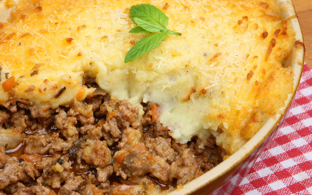

Potato cake with ground beef

Image credit: TudoGostoso
Description
A dish to be served for lunch or dinner, super nutritious and easy to make.
Ingredients
1kg of cooked potatoes
Salt to taste
2 tablespoons of margarine
3 tablespoons of cornstarch
1 cup of milk
3 egg yolks
3 egg whites
For the Filling:
Salt to taste
Garlic
Onion
1kg Ground Beef
Corn and peas
Tomato paste
Olive oil
1 cup water
Grated cheese
Steps
For the filling:
Step 1Pound the garlic and brown it in the olive oil along with the onion
Step 2Let it brown until golden brown
Step 3Add the water, beef broth, salt, and tomato paste.
Step 4Add the ground beef and cook. Don't let it remain in a broth when the meat is ready; it should be dry.
Step 5For the mashed potatoes: Pour the mashed while still hot throught a ricer.
Step 6Heat the milk and dissolve the cornstarch in it.
Step 7Add the mashed potatoes to the mashed potatoes: the egg yolks, margarine, an the milk the dissolved cornstarch.
Step 8Beat the egg whites until stiff and add them.
Step 9Bring the mixture to a boil over medium heat, stirring constantly for 6 minutes.
Step 10Remove the mashed potatoes from the heat
Assembling the cake:
Step 11Grease a medium baking dish with a little margarine.
Step 12Pour half of the puree you just removed from the heat, but
Step 13Don't spread it too thin.
Step 14Pour the ground beef
Step 15The other half of the puree.
Step 16Sprinkle grated sheese on top.
Step 17Bake in a moderate oven for 30 minutes.
Step 18It's ready!
Home